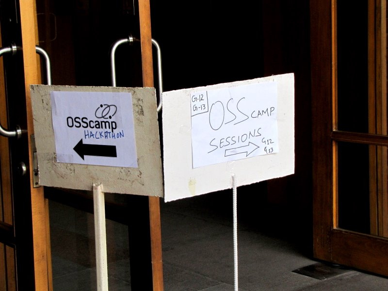

Developers Conference
Leave your email address here and we will let know when we have an important update.
About OSDConf
OSDC in collaboration with other open-source communities organized OSSCamp Delhi in 2010. The unconference was loaded with FOSS spirit, open hacks and free swag.
OSDConf, as a fresh edition of attempts by OSDC to promote FOSS, is coming to revive the same energy.
Speakers
Call for Proposals
We are now accepting submissions for presentations.
We'd love to hear your ideas for talks on the many and varied aspects of Open Source Technologies. Our favorite topics are those that deliver hard-earned knowledge based on real-world experience and research. We are mainly intrested in the topics like Web Ecosystem, Hardware Programming, etc. Come share with us!
Go ahead, suggest a speaker or submit a talk!
Sponsors
Call For Sponsorship
We are seeking sponsors to help us create the best conference possible. Please act fast and help up make this a success
For more information please contact us.